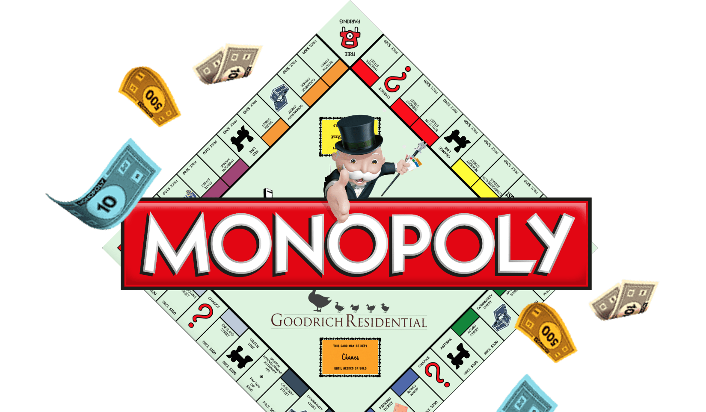

Mūsu spēles ir paredzētas PIEAUGUŠAJAI auditorijai, kas vecāka par 18 gadiem. Noklikšķiniet uz Pieņemts, lai apstiprinātu savu vecumu.
Monopols
Monopols ir klasiska galda spēle, ar kuru jūs varat kļūt par biznesmeni.

Par spēli
Monopols ir klasiska galda spēle, kas izaicina spēlētājus kļūt par drošiem un likumīgiem "pirmajiem" ideju nekustamo īpašumu biznesā. Spēlē katrs spēlētājs iegūst iespēju izveidot un attīstīt savu impēriju, pērkot, pārdodot un tirgojot dažādus nekustamā īpašuma objektus, piemēram, ielas, dzelzceļa un spēkstacijas, lidostas un citas apskates vietas. Spēles mērķis ir kļūt bagātam, palielinot ienākumus no īpašuma nomas un stratēģiski pārvaldot izmaksas un investīcijas. Dalībnieki tiek nogādāti aizraujošajā biznesa pasaulē, kur katrs solis viņus iegulda virknē iespēju un risku, kas nes labklājību vai postu. Tāpēc sagatavojieties aizraujošam piedzīvojumam pirmajā, drošajā un likumīgajā monopola spēlē.
Monopols ir droša un legāla galda spēle, kas ļauj spēlētājiem kļūt par pirmajiem unikāla biznesa īpašniekiem un izbaudīt komforta un drošības atmosfēru.
Ermīna Liepiņa
Monopols ir pati pirmā un legālā spēle, kurā var justies kā īsts uzņēmējs un attīstīt savas finanšu un nekustamā īpašuma pārvaldīšanas prasmes.
Felicjana Birziņa
Pateicoties Monopolam, esmu atradis jautru veidu, kā pavadīt laiku kopā ar draugiem un ģimeni, vienlaikus jūtoties droši un spēlējot saskaņā ar noteikumiem.